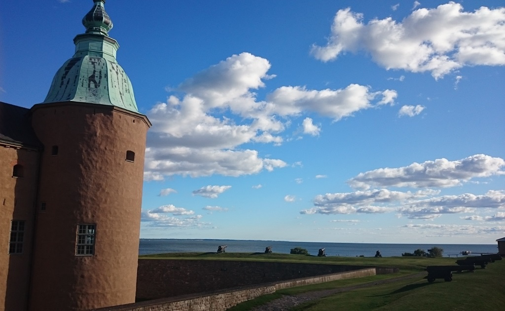

En dag på slottet
I mitt vanliga missöde när det gäller bussar så missade jag precis Karlskronabussen med ungefär 2 minuter. Då bussen bara går en gång i timmen så tänkte jag bra, då hinner jag gå förbi Frasses och äta ett skrovmål, något som bara finns norr om Härnösand på andra kedjor. När jag kommer fram ser jag en lapp på dörren med texten "Tyvärr tar vi bara kontanter idag då det inte fungerar med kort". Även där blev det inget, då jag som vilsen norrlänning inte kan Kalmar nog bra för att leta upp en uttagsautomat och satte siktet på Kalmars slott istället. Efter en promenad genom en överraskande fin slottspark kommer jag fram till slottet och klättrar upp på barrikaderna och får en underlig känsla av igenkännelse. Detta även fast jag inte besökt slottet tidigare, måste vara från de historieböcker med bilder jag läste som liten som gör sig påmind. För att inte fastna bakom en grupp med tyska turister samt att inte missa ytterligare en buss smyger jag ner mot bussstationen igen för att återkomma vid ett senare tillfälle och ta en mer noggrann vända.